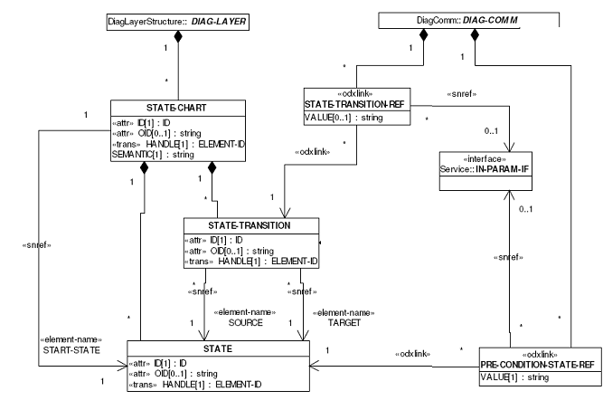
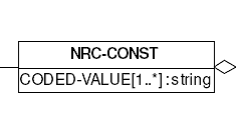
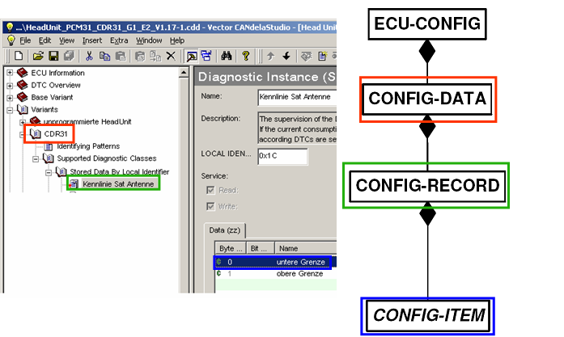

With CANdela 5.5 Release, the export of ODX 2.1.0 is supported. The following section describes the additionally exported elements in ODX 2.1.0Export of CANdela State-Model to ODX 2.1.0 STATE-Model

ODX 2.1.0 STATE-model
STATE-CHART matches the CANdela-StateModel
STATE matches CANdela-STATE
each STATE-CHART describes it Default-State by START-STATE-SNREF
With CANdela 7.0 SP1 it is possible to define State dependencies also for Jobs.
They will also be exported as STATE-TRANSITION-REFs at the corresponding SINGLE-ECU-JOB.
for each CANdela-StateGroup a STATE-CHART is created.
for each CANdela-State a STATE is created.
for each StateTransition described at a Service, a STATE-TRANSITION is created.
When this Transition is once created it is referenced by all DIAG-SERVICEs.
During matching of negative responses the 3-D-Server-API currently only uses constant-components for matching of the negative-reponse-template (i.e. 7F SID). It does not check the supported negative response-codes of the specific NEG-RESPONSE. Therefore the GLOBAL-NEG-RESPONSE is pratically never used for interpretation of a negative response. In ODX 2.1.0 there exists the possibility to specify an additional NRC-CONST-PARAM.

Schema of NRC-CONST
At the NRC-CONST-PARAM the supported NRC-CODEs can be listed by CODED-VALUEs.
The export of NRC-Const parameters can be configured by the OdxExportOption "CreateNRCConst".
[ODXE-R1180]

Basic schema for ECU-CONFIG export
The ECU-CONFIG description contains
one CONFIG-DATA per Variant
one CONFIG-RECORD per Diagnostc Instance (which is relevant for ECU-CONFIG)
one CONFIG-ITEM per Dataobject within this Diagnostic Instance.
By the ODXExportOption "ExportSeparateDopsForEcuConfig" it can be configured whether DATA-OBJECT-PROPs are referenced from ODX-D or duplicated to the CONFIG-DATA-DICTIONARY-SPEC. UNITs referenced from ECU-SHARED-DATAs are also copied to the ECU-CONFIG.
The Attribute "Relevant for EcuConfig" at Diagnostic Instances and Job Containers can be used to specify relevant Containers for ECU-CONFIG.
Currently no standardized ODX 2.1.0 COMPARAM-SPEC is released. Therefore no COMPARAM-REFs are exported.